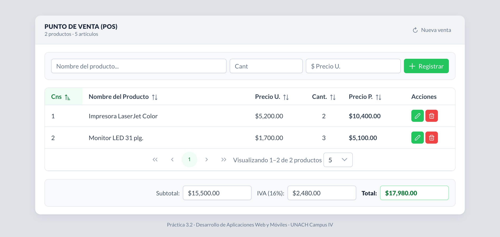
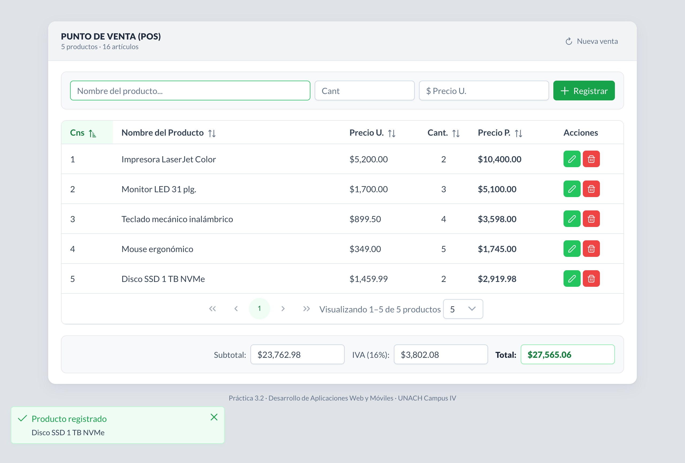
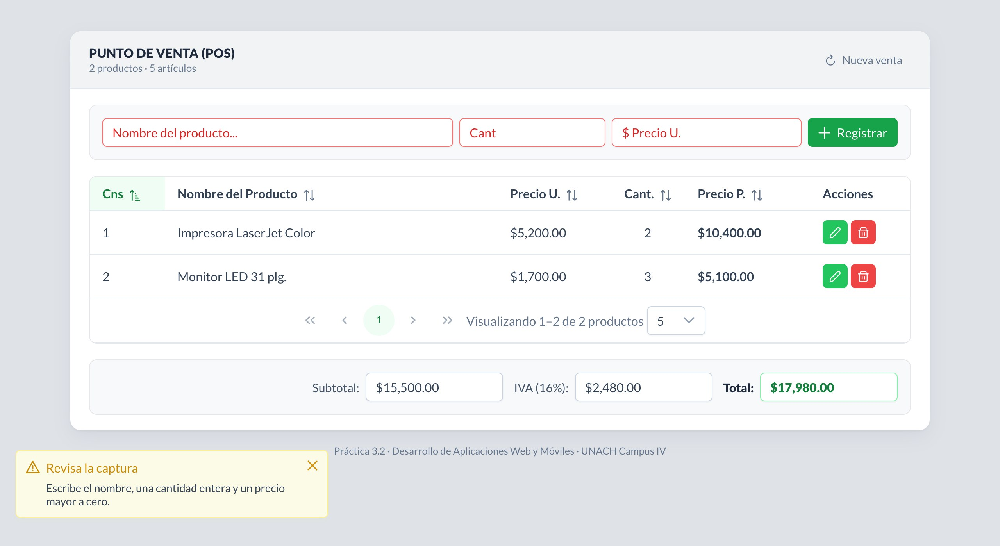
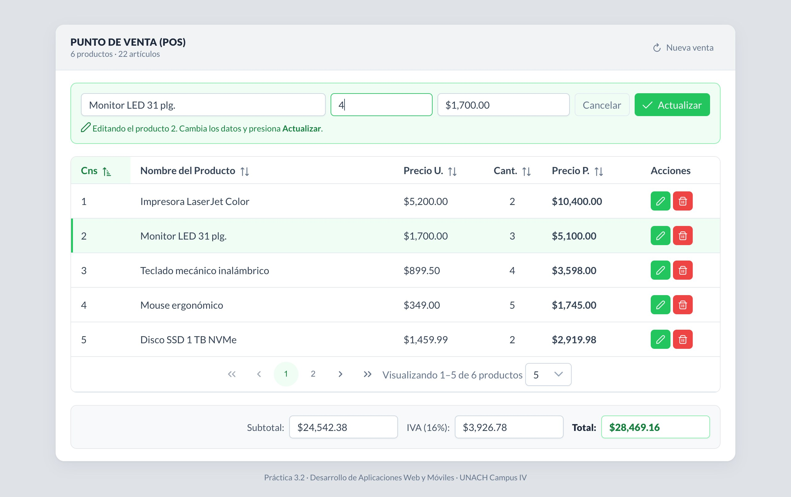
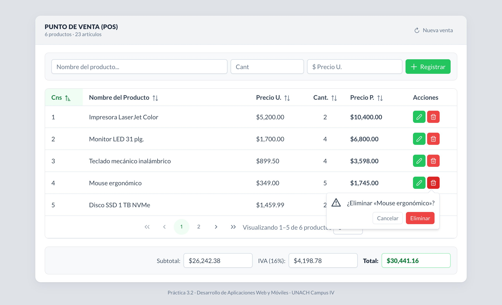
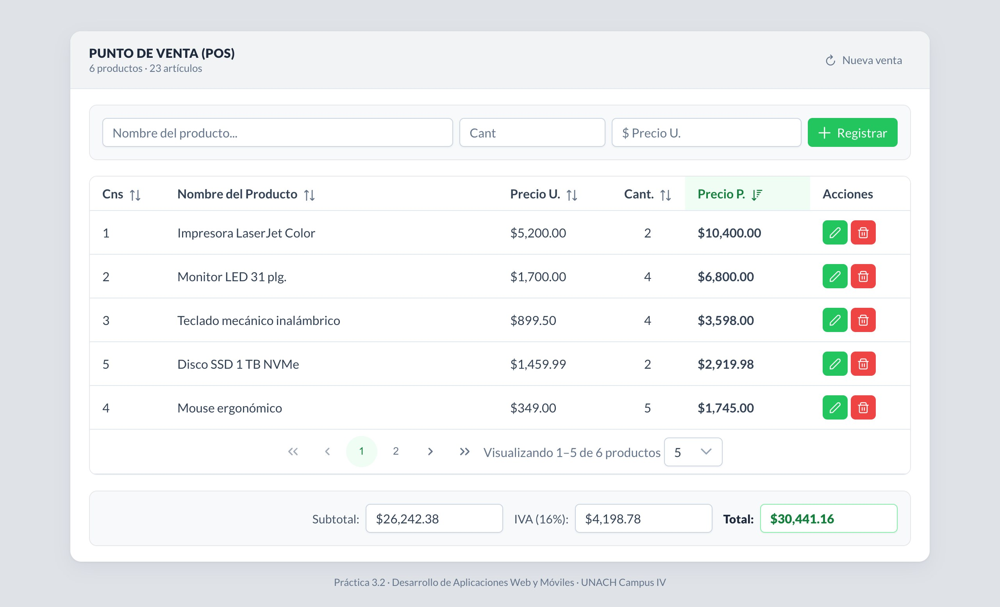
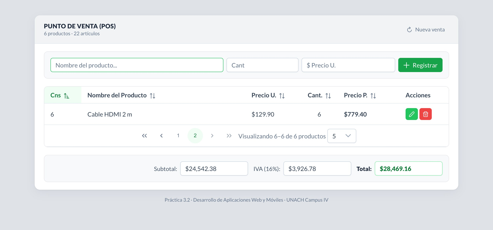
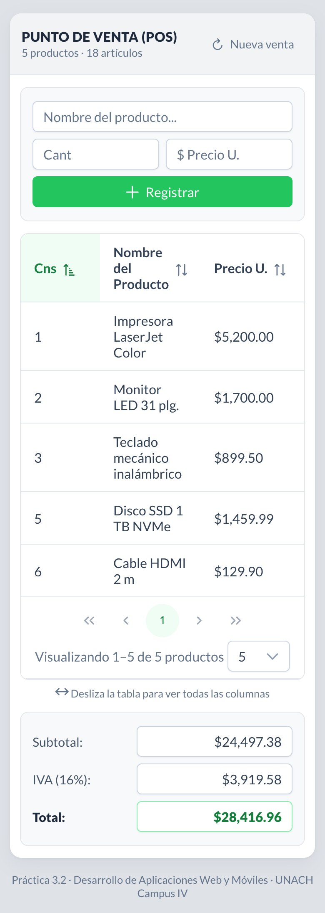

Escuela de Tecnologías Digitales Aplicadas · Campus IV Tapachula
Desarrollo de Aplicaciones Web y Móviles
Práctica 3.2
App de Punto de Venta con el componente DataTable

Interfaz del punto de venta con los productos del ejemplo de la práctica.
Alumno
Ezequiel Peña Mazariegos
Matrícula
100017097
Semestre y grupo
7.º semestre · Grupo A
Docente
Dr. Christian Mauricio Castillo Estrada
Tecnología
Vue 3 + PrimeVue (DataTable)
Dominio (Vercel)
https://punto-de-venta-unach.vercel.app
GitHub
https://github.com/Ezequielpm/portafolio-dawm
Tapachula, Chiapas · 10 de noviembre de 2026
1. Problemática y objetivo
En un mostrador, el cajero necesita capturar rápido lo que el cliente
lleva, corregir una cantidad o quitar un artículo sin empezar de nuevo, y
conocer en todo momento cuánto va a cobrar con impuestos incluidos. Hacer esas
cuentas a mano, o en una tabla que no se recalcula sola, provoca errores de
cobro.
El objetivo de la práctica fue desarrollar, con Vue 3 y el
componente DataTable de PrimeVue, una interfaz que simule un
punto de venta: registrar, editar y eliminar productos de una
compra y calcular el Subtotal, el IVA (16 %) y el Total a
pagar, siguiendo la imagen de referencia de la actividad.
Vue 3.5 con componentes de archivo único y <script setup>; el formulario usa reactive y los totales son propiedades computed.
Componentes de UI
PrimeVue 4.5 con el tema Aura en verde (como los botones de la referencia): DataTable y Column, InputText, InputNumber, Button, Toast, ConfirmPopup y PrimeIcons.
Estado
Un composable (useVenta.js) guarda la lista de productos, calcula los totales y la conserva en localStorage.
Herramientas
Vite 8 para desarrollo y compilación; publicación en Vercel.
06-punto-de-venta/
├── index.html
└── src/
├── main.js PrimeVue, tema Aura verde, Toast y ConfirmPopup
├── App.vue formulario de captura, DataTable y totales
├── composables/useVenta.js productos, registrar/actualizar/eliminar, Subtotal, IVA y Total
└── style.css estilos generales
Se usó PrimeVue 4.5 porque tiene licencia MIT; PrimeVue 5 pasó a una
licencia comercial que, sin clave registrada, muestra un aviso sobre la
página.
4. Procedimiento para usar el DataTable de PrimeVue
4.1 Instalación y registro
Se creó el proyecto con Vite y se instalaron PrimeVue, su paquete de temas
y los íconos. En main.js se registra PrimeVue con el tema Aura, y
los servicios de notificaciones y de confirmación:
import PrimeVue from 'primevue/config'
import ToastService from 'primevue/toastservice'
import ConfirmationService from 'primevue/confirmationservice'
import Aura from '@primeuix/themes/aura'
import 'primeicons/primeicons.css'
app.use(PrimeVue, { theme: { preset: Tema } }) // Tema = Aura con primario verde
app.use(ToastService)
app.use(ConfirmationService)
4.2 Datos de la tabla
El DataTable recibe un arreglo de objetos en la propiedad
value. Cada producto tiene su consecutivo (cns), el
nombre, el precio unitario y la cantidad; el precio parcial no se guarda, se
calcula al mostrarlo. La lista es un ref, así que cualquier
cambio vuelve a dibujar la tabla y los totales:
Cada <Column> indica el campo (field) y el
encabezado (header); con sortable el encabezado
ordena al hacer clic. Las columnas de dinero usan la plantilla
#body para dar formato de moneda, y la de acciones contiene los
botones de editar y eliminar. La paginación se activa con
paginator, y paginatorTemplate acomoda los
controles como en la referencia: primera, anterior, números, siguiente,
última, el texto «Visualizando…» y el selector de filas.
Como «Precio P.» no es un campo guardado, su sortField recibe
la función importe y la tabla ordena por el valor calculado.
v-model:first permite que el programa cambie de página: al
registrar, la tabla salta a la página donde quedó el producto nuevo, y al
eliminar el último de una página regresa a la anterior. rowClass
resalta la fila que se está editando.
4.4 Registrar, editar y eliminar
Las tres operaciones viven en useVenta.js y solo modifican el
arreglo; el DataTable se actualiza solo:
function registrar({ nombre, precio, cantidad }) {
const cns = productos.value.reduce((max, p) => Math.max(max, p.cns), 0) + 1
productos.value.push({ cns, nombre, precio, cantidad })
}
function actualizar(cns, datos) {
const i = productos.value.findIndex(p => p.cns === cns)
if (i !== -1) productos.value[i] = { ...productos.value[i], ...datos }
}
function eliminar(cns) {
productos.value = productos.value.filter(p => p.cns !== cns)
}
El consecutivo nuevo es el mayor existente más uno, de modo que no se
repite aunque se hayan eliminado productos intermedios.
4.5 Cálculo del Subtotal, IVA y Total
Los tres importes son propiedades computed: se recalculan cada
vez que cambia un producto. Las cuentas se hacen en centavos
enteros para evitar los residuos de los decimales en JavaScript
(por ejemplo, 0.1 + 0.2 = 0.30000000000000004), y el IVA se redondea al
centavo:
Con los productos de la imagen de referencia: Subtotal = 10,400 + 5,100 =
$15,500.00; IVA = 15,500 × 0.16 = $2,480.00;
Total = $17,980.00, igual que en la actividad.
5. Funcionalidades
5.1 Registrar un producto
Se escribe el nombre, la cantidad y el precio unitario (un InputNumber en
pesos mexicanos) y se presiona Registrar o la tecla Enter. El
producto aparece en la tabla con su consecutivo y su precio parcial, los
totales se actualizan, una notificación confirma el registro y el cursor
vuelve al nombre para capturar el siguiente.

Figura 1. Tres productos registrados además de los dos de la referencia.
5.2 Validación
Si falta el nombre, la cantidad no es un entero mayor a cero o el precio
no es mayor a cero, los campos se marcan en rojo, aparece un aviso y no se
registra nada.

Figura 2. Intento de registrar con el formulario vacío.
5.3 Editar
El botón verde con el lápiz carga el producto en el formulario. El panel
se pinta de verde, la fila queda resaltada y el botón cambia a
Actualizar; también aparece Cancelar para
salir sin cambios. Al actualizar, la fila y los totales cambian al
instante.

Figura 3. Edición del monitor: la cantidad cambia de 3 a 4.
5.4 Eliminar
El botón rojo abre un ConfirmPopup junto a la fila para evitar borrados
por accidente. Al confirmar, el producto sale de la tabla y se descuenta de
los totales. El botón Nueva venta del encabezado vacía toda
la lista, también con confirmación.

Figura 4. Confirmación antes de eliminar el mouse ergonómico.
5.5 Ordenamiento y paginación
Todas las columnas de datos se ordenan con clic en su encabezado (un
segundo clic invierte el orden). La tabla muestra 5 productos por página,
como la referencia, y el selector permite ver 10 o 20.

Figura 5. Orden descendente por Precio P.

Figura 6. Con 6 productos la tabla pasa a la página 2.
5.6 Persistencia y diseño responsivo
La venta se guarda en localStorage: al recargar la
página los productos y los totales siguen ahí. La primera vez que se
abre la aplicación aparecen los dos productos de la imagen de
referencia.
Por debajo de 760 px el formulario se reacomoda en dos
columnas, el botón ocupa todo el ancho, los totales se apilan y la
tabla se desliza horizontalmente dentro de su marco, con una
indicación para el usuario. La página no se desborda a 390 px de
ancho (figura 7).

Figura 7. Versión publicada a 390 px.
6. Pruebas
Las pruebas se automatizaron con Chrome sin interfaz (Puppeteer) sobre la
versión publicada en Vercel, a 1280 px y a 390 px de ancho:
Prueba
Resultado
Abrir por primera vez
Dos productos; $15,500.00 / $2,480.00 / $17,980.00, igual que la referencia
Subtotal $23,762.98; IVA $3,802.08 (redondeado de 3,802.0768); Total $27,565.06
Registrar un sexto producto
Aparece la página 2 y la tabla salta a ella
Editar el monitor de 3 a 4 piezas
Precio P. $6,800.00; el subtotal sube exactamente $1,700.00
Ordenar por Precio P. descendente
Impresora, monitor, teclado, SSD, mouse
Eliminar el mouse
Pide confirmación; el subtotal baja $1,745.00
Recargar la página
Se conservan productos y totales
Vista a 390 px
Sin desbordamiento horizontal
Consola del navegador
Sin errores ni advertencias
Las pruebas encontraron una falla que se corrigió antes de la entrega: las
notificaciones aparecían arriba a la derecha y, al registrar varios productos
seguidos, tapaban el campo de precio y el botón Registrar. Se movieron a la
esquina inferior izquierda.
7. Conclusiones
La aplicación cumple lo que pide la práctica: registra, edita y elimina
productos de una compra y calcula el Subtotal, el IVA y el Total a pagar, con
una interfaz que sigue la imagen de referencia y está publicada en un dominio
gratuito.
El DataTable de PrimeVue resolvió con unas cuantas propiedades lo que a
mano costaría bastante código: ordenamiento por columna, paginación con
selector de filas y plantillas para dar formato a cada celda. Al combinarlo
con la reactividad de Vue, la tabla y los totales nunca se desincronizan,
porque ambos se derivan del mismo arreglo. El detalle más delicado fue el
dinero: calcular en centavos enteros evitó los errores de redondeo de los
números decimales.